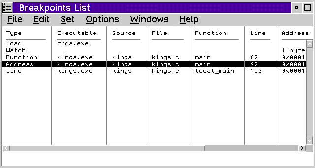

Displays the Breakpoints List window, which lists all the breakpoints that have been set. It also shows the state of each breakpoint.

Use the Breakpoints List window to display a list of the breakpoints that have been set. The following information is also provided for each breakpoint.
For more information on the Breakpoints List window, refer to Using the Breakpoints List Window.